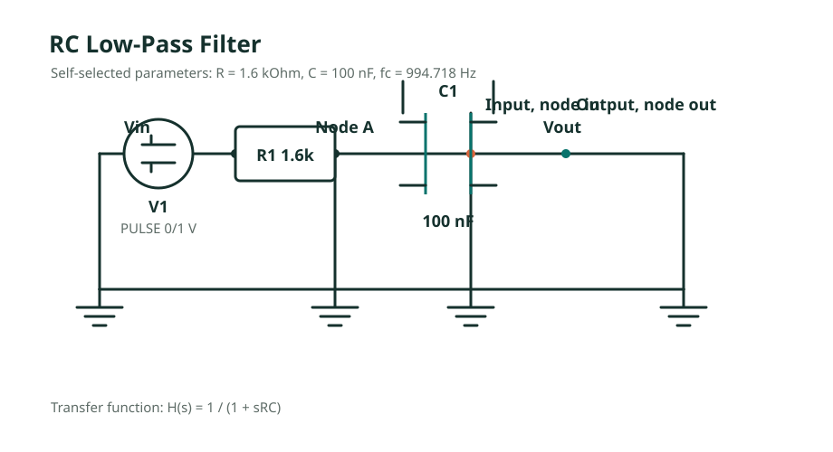
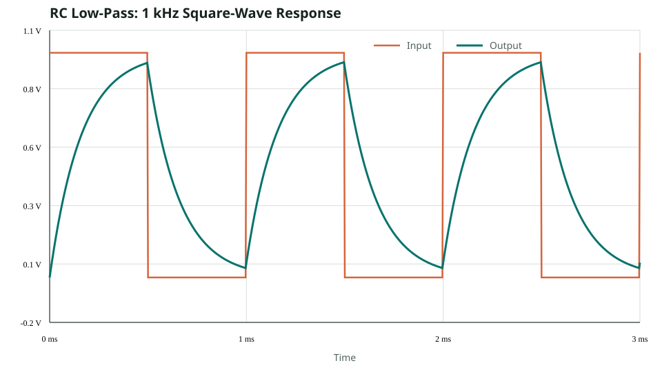
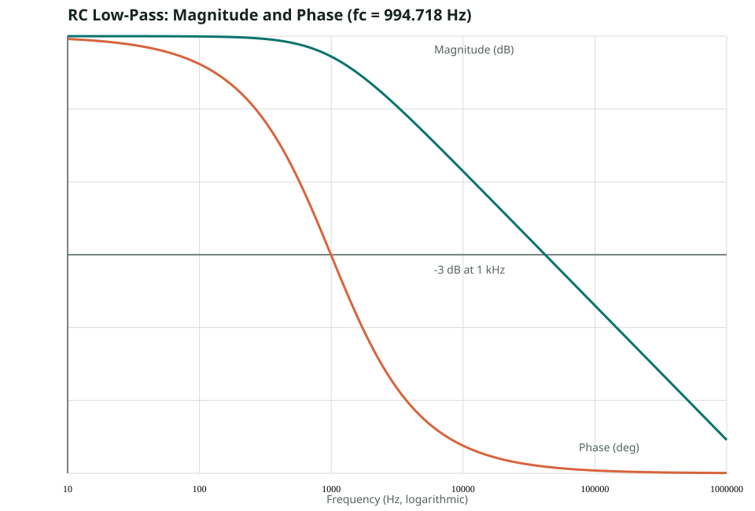
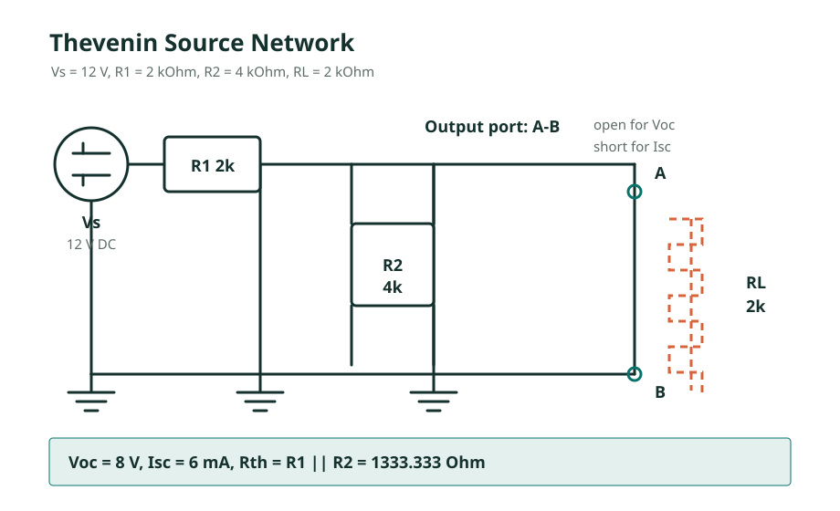
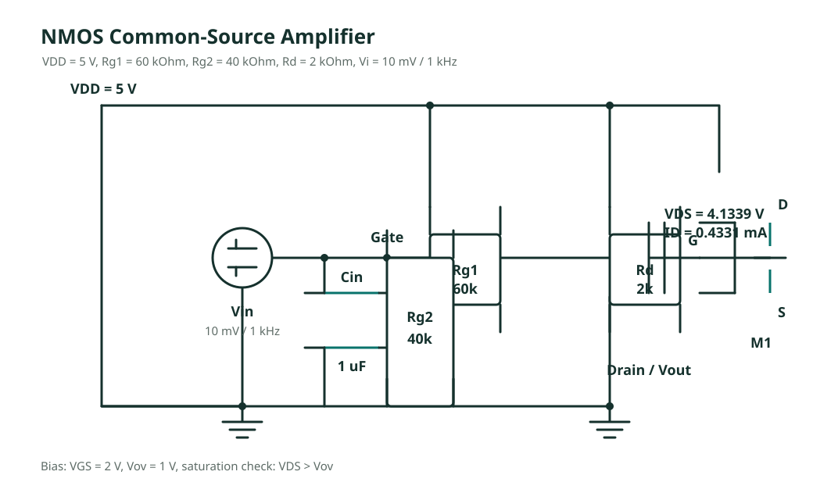
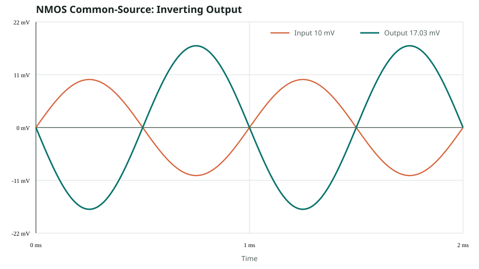

ADVANCED CHALLENGE / PYSPICE
进阶挑战：三个电路的理论计算与仿真验证
RC 低通滤波、戴维南定理验证、NMOS 共源级放大电路。 本报告包含电路图、手算过程、理论值与 PySpice 参考值。
01 RC 低通滤波电路
电路与参数
自选 R = 1.6 kΩ、C = 100 nF，输入为 0 V / 1 V、1 kHz 方波。

手算过程
τ = RC = 1600 × 100 × 10^-9 = 1.60 × 10^-4 s
fc = 1 / (2πRC)
= 1 / (2π × 1.6 × 10^3 × 100 × 10^-9)
= 994.718 Hz
|H(jω)| = 1 / sqrt(1 + (f/fc)²)
= 1 / sqrt(1 + (1000/994.718)²)
= 0.70752
20 log10(0.70752) = -3.008 dB
φ = -atan(1000/994.718) = -45.15°
瞬态波形与波特图


理论值与仿真对比
| 指标 | 手算值 | PySpice 参考值 | 允许误差 |
|---|---|---|---|
| 截止频率 fc | 994.718 Hz | 994.7 Hz | ±0.5% |
| 1 kHz 幅频响应 | -3.008 dB | -3.0 dB | ±0.2 dB |
| 1 kHz 相频响应 | -45.15° | -45.1° | ±1° |
结论：截止频率处增益下降约 3 dB，相位约为 -45°；
高频段幅频曲线按约 -20 dB/dec 下降，与一阶 RC 低通理论一致。
02 戴维南定理验证
含源二端网络
端口 A-B 位于 R2 两端，独立电压源 Vs = 12 V，串联电阻 R1 = 2 kΩ，并联电阻 R2 = 4 kΩ，负载 RL = 2 kΩ。

手算过程
开路电压：
Voc = Vs × R2 / (R1 + R2)
= 12 × 4000 / (2000 + 4000)
= 8 V
短路电流：
Isc = Vs / R1 = 12 / 2000 = 6 mA
等效电阻：
Rth = R1 || R2
= (2000 × 4000) / (2000 + 4000)
= 1333.333 Ω
接 RL = 2 kΩ：
VL = Voc × RL / (Rth + RL)
= 8 × 2000 / (1333.333 + 2000)
= 4.8 V
IL = VL / RL = 4.8 / 2000 = 2.4 mA
理论与仿真对比
| 场景 | 指标 | 手算值 | PySpice 参考值 |
|---|---|---|---|
| 原电路开路 | Voc | 8.000 V | 8.000 V |
| 原电路短路 | Isc | 6.000 mA | 6.000 mA |
| 原电路接 2 kΩ | VL | 4.800 V | 4.800 V |
| 原电路接 2 kΩ | IL | 2.400 mA | 2.400 mA |
| 等效电路接 2 kΩ | VL | 4.800 V | 4.800 V |
| 等效电路接 2 kΩ | IL | 2.400 mA | 2.400 mA |
验证结论：原电路和等效电路接入相同负载后，端口电压与电流一致；
因此从 A-B 端口看，8 V 电压源串联 1333.333 Ω 可以替代原网络。
03 NMOS 共源级放大器
电路与固定参数
题卡参数：VDD = 5 V，Rg1 = 60 kΩ，Rg2 = 40 kΩ，Rd = 2 kΩ，Vth = 1 V，KP = 0.8 mA/V²，λ = 0.02 /V，输入 Vi = 10 mV、1 kHz。

静态工作点
VG = VDD × Rg2 / (Rg1 + Rg2)
= 5 × 40 / (60 + 40)
= 2 V
VGS = 2 V
Vov = VGS - Vth = 1 V
按 SPICE Level-1 模型：
ID = (KP/2) × Vov² × (1 + λVDS)
VDS = VDD - ID × Rd
联立求解：
ID = 0.43307 mA
VDS = 5 - 0.43307 × 2 = 4.13386 V
饱和区判断
VDS = 4.13386 V
VGS - Vth = 1 V
VDS > VGS - Vth
结论：NMOS 工作在饱和区。
小信号计算
gm = 2ID / Vov
= 2 × 0.43307 / 1
= 0.86614 mS
ro = 1 / (λID)
= 1 / (0.02 × 0.43307 × 10^-3)
= 115.455 kΩ
Rout = Rd || ro = 1.96594 kΩ
Av = -gm × Rout
= -0.86614 × 10^-3 × 1965.94
= -1.70279
|Vout| = 10 mV × 1.70279 = 17.03 mV

理论与仿真对比
| 指标 | 手算值 | PySpice 参考值 | 允许误差 |
|---|---|---|---|
| VGS | 2.000 V | 2.000 V | ±0.1% |
| ID | 0.4331 mA | 0.433 mA | ±1% |
| VDS | 4.1339 V | 4.134 V | ±0.1% |
| gm | 0.8661 mS | 0.866 mS | ±1% |
| Rout | 1.9659 kΩ | 1.966 kΩ | ±1% |
| Av | -1.7028 | -1.703 | ±1% |
| 输出幅值 | 17.03 mV | 17.03 mV | ±2% |
结论：放大器的静态点位于饱和区，交流增益为负，输入与输出反相。
λ 使 ID 略高于忽略沟道长度调制时的 0.4 mA。
04 代码运行与验收
三个 Python 文件
| 文件 | 分析内容 | 输出 |
|---|---|---|
| rc_low_pass.py | 方波瞬态、AC 波特图、截止频率 | CSV + PNG |
| thevenin.py | Voc、Isc、原电路带负载、等效电路带负载 | CSV |
| nmos_common_source.py | 静态点、饱和判断、gm、增益、反相波形 | CSV + PNG |
运行命令
python -m pip install -r requirements.txt
python rc_low_pass.py
python thevenin.py
python nmos_common_source.py
提交验收清单
- 三个 .py 文件均能独立运行。
- 每个电路都包含自己画出的电路图。
- 每个电路都有公式、手算过程和饱和区判断。
- 每个电路都有 PySpice 波形或数值输出。
- 每个电路都有“理论值 vs 仿真值”对比表。
- RC 电路包含方波瞬态、波特图和截止频率对比。
- 戴维南电路包含 Voc、Isc、等效电路和负载验证。
- NMOS 电路包含 VGS、ID、VDS、gm、增益和反相波形。
参数约定说明
本报告按 PySpice/ngspice Level-1 MOSFET 模型理解 KP，因此饱和区电流公式为 ID = (KP/2) × Vov² × (1 + λVDS)。如果其他教材把 K 定义成公式系数本身， 则需先确认定义，再进行数值比较。